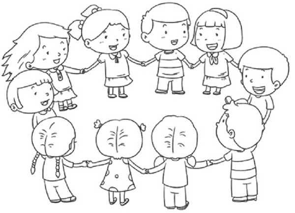
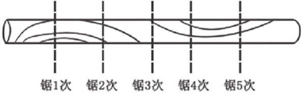
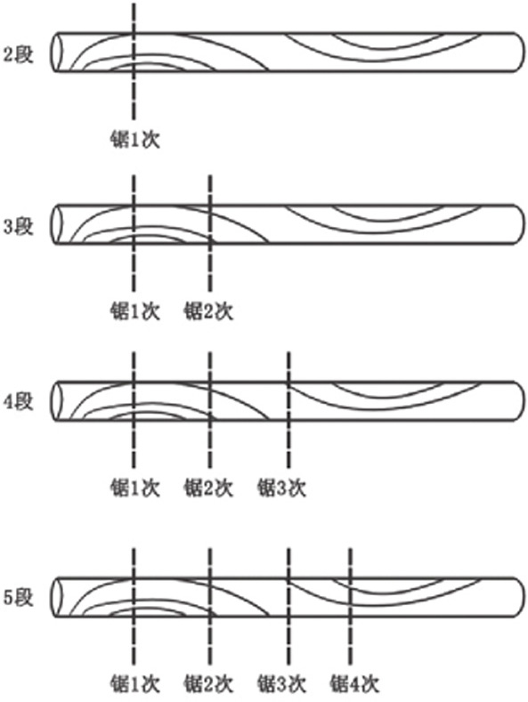
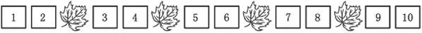
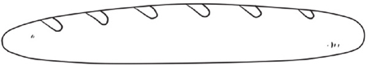
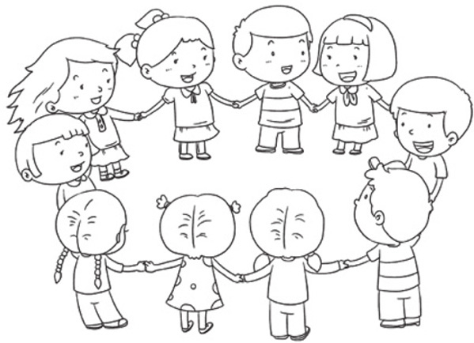

锯木头、爬楼梯问题是主要的两种间隔问题，面对这一类问题，孩子容易先入为主，有思维定式，如认为锯木头的段数和次数是一样的等。要解决这一类问题可以让孩子实际动手摆放积木验证，或者画图验证，这样更加形象、更加直观。
间隔问题的训练，可以培养孩子使用数学解决实际生活问题的能力、掌握使用图形解决实际问题的方法。

典型例题 1 一根10米长的木头，如果用锯子锯5次，木头变成几段了？
根据题目的意思，如下图所示，画一根木头，用竖线表示锯的次数，画5条竖线表示锯了5次，然后数木头的段数。从左到右数，木头一共有6段，所以木头变成了6段。

我们分别看一下，如下图所示，锯1次、2次、3次、4次后木头的段数。可以看到锯的段数和次数是有关系的，锯的段数比锯的次数多1。

典型例题 2 马克家住4楼，马克爬1层楼梯要用1分钟，马克从1楼开始爬楼梯，到家要用几分钟？
1楼到2楼要爬1层楼梯，2楼到3楼要爬1层楼梯，3楼到4楼要爬1层楼梯，一共要爬1+1+1=3层楼梯，所以马克从1楼到家一共要用1+1+1=3分钟。
从1楼爬到相应的楼层，楼梯的层数要比楼层数少1，如从1楼爬到10楼，要爬10-1=9层楼梯。
典型例题 3 莫妮卡有一本一共10页的书，莫妮卡想每隔2页夹进1片枫叶，那这本书里可以夹几片枫叶？
还是使用图解的方法来解决问题。如下图所示，数字代表相应的页数，根据题目的意思，每隔2页夹进1片枫叶，数出枫叶的数量就可以了。

枫叶的数量一共是4片。
1.要把一根钢管锯成4段，一共要锯几次？
2.嘟嘟想把6根短绳接成1根长绳，你知道需要打多少个结吗？
3.在木头加工点，加工费用按照锯的次数收钱。一位叔叔把木头锯成了3段，一共交了6元钱，如果另外一位叔叔想把木头锯成5段，应该付多少钱？
4.林叔叔家住在5楼，林叔叔爬1层楼梯需要2分钟，林叔叔从1楼爬楼梯回家需要多少分钟？
5.莫妮卡有一本15页的书，她想每3页放1张书签，你能算出来莫妮卡需要多少张书签吗？
6.一个长棍面包，如果要分给8个人吃，需要分成几段，需要切几次？

7.10个男孩子排成了一队，如果在每2个男孩子之间插进1个女孩子，那么队伍一共将有多少人？
8.10位小朋友站成一圈，如果在每2位小朋友之间再插进1位小朋友，一共插进多少位小朋友？
